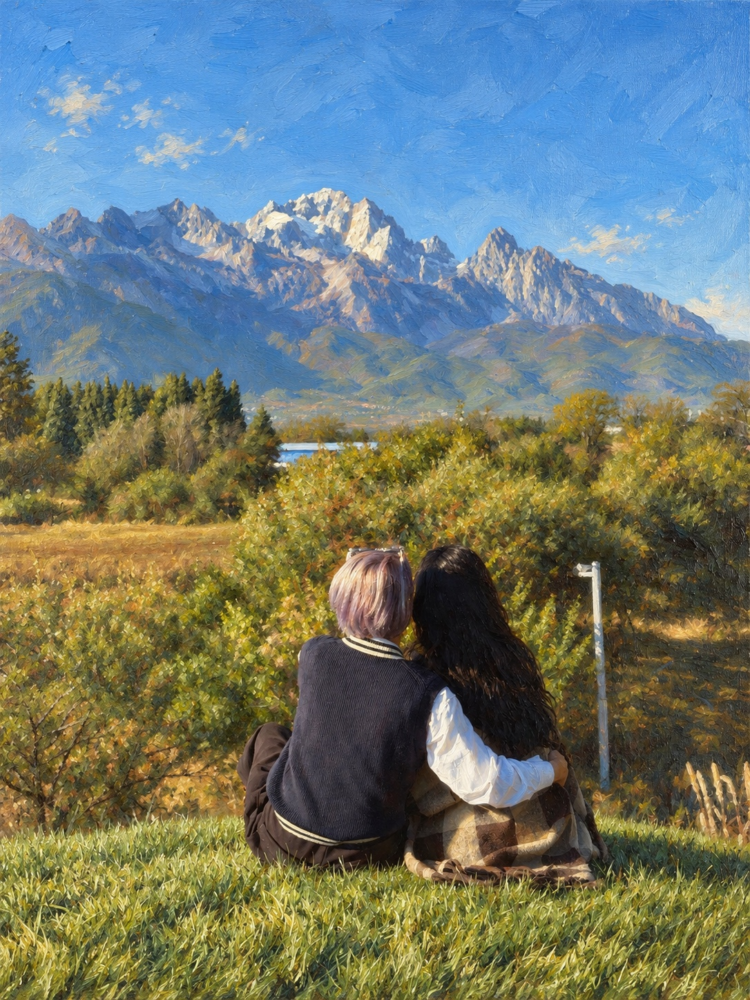

This Life
With You
WITH YOUMY BLU · 01

This Life With You
We were two lives moving on our own, Never knowing where the road would go. Then somehow, quietly, You became a part of me.
It started with the little things, A tea egg, a mushroom, late-night rings, Waiting in the morning just to walk with you, Somewhere in between, my feelings grew. I wanted to tell you everything, Every little story the new day brings. I didn’t know that I was falling then, I only knew I wanted you again.
And when I thought that I could lose you, That’s when my heart finally knew, I wasn’t only falling, I was choosing you.
I don’t need a perfect life, I just want this life with you. Midnight drives and quiet nights, All the little things we do. If every ordinary day Ends with me right next to you, Then I already have everything, I just want this life with you.
You showed me parts you tried to hide, The older wounds you carried deep inside. You called yourself broken, but all I could see Was every road that brought you here to me. Then you talked about tomorrow Like somehow I belonged there too. And for the first time, forever Didn’t scare me when I pictured you.
I can’t promise there won’t be hard days, Or that we’ll never lose our way. But whatever waits beyond tonight, You won’t face it on your own.
I don’t need a perfect life, I just want this life with you. Shared dinners and midnight drives, Growing old with the same old view. If every ordinary day Ends with me right next to you, Then I already have everything, I just want this life with you.
A tea egg. A mushroom. A message after midnight. Our first call. Those mornings waiting by your side. Who would’ve known Something so small Could somehow become my whole world? And now we’re taking roads together, Hand in hand beneath new skies. Yun nan’s only our first journey, There are still a thousand more to find.
So when we’re older, When our hair turns grey, When these photographs Are memories of yesterday… I hope I still reach for your hand The way I do today.
I don’t need a perfect life, I just want this life with you, my love, Every road and every sky, Every dream we’re walking to. And if every ordinary day Ends with me right next to you, Then I already have everything, Every time, I’d still choose you. Thank you for living this life with me, For every night and every memory. Wherever this world takes us to, I’ll choose your hand, I’ll choose this life, I’ll choose you.
And if I had to choose again, Through every road, Every version of us, Every lifetime… I’d still choose you my Blu.
I just want this life with you.”